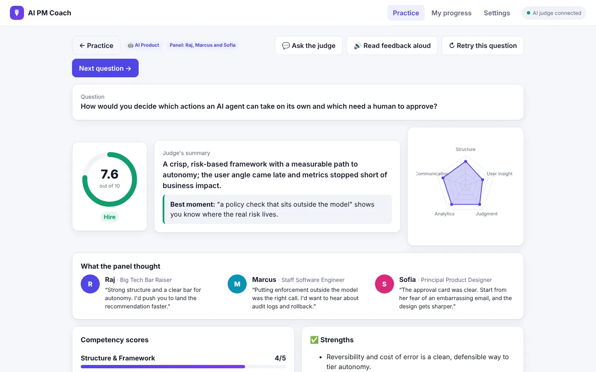

Himanshi Arora, AI product manager
I lead the strategy, roadmap, and evals for enterprise-grade autonomous agents.
6+ years taking products from 0 to 1, most recently agents for enterprise supply chains. Berkeley Haas MBA, based in Sunnyvale.
Ted
Your personal gym coach
An AI strength coach for gym beginners. Every morning Ted reads how you slept, what you've trained, and your calendar, then plans one workout that fits your day, and talks to you like he believes in you.
Built for
Beginners who freeze at the gym door, especially women new to lifting.
What it does
Decides if you should train today, plans the session, coaches you through it, and adapts.
How I tested it
11 test cases, including the safety lines Ted must never cross.
Project SWAN
Autonomous supply chain manager
A prototype of a proactive, always-on agent for supply chains. SWAN watches connected systems around the clock, investigates disruptions, simulates every option before it acts, and only brings a person in when a decision is theirs to make.

Built for
Supply planners who drown in exceptions, and leaders who want a self-driving supply chain they can trust.
What it does
Senses signals, investigates, simulates options, acts within set limits, and escalates with a ready briefing.
How it's governed
Autonomy limits, approval gates, a never-do list, task budgets, and an audit trail with rollback.
AI PM Coach
Feedback on your product thinking in minutes, not quarters
An AI coach for product managers. Talk through a product problem out loud, get pushed by AI personas or a whole panel, then get scored on five PM competencies with specific feedback on what to fix.

Built for
PMs sharpening their product thinking, especially on AI topics like evals, agents, and guardrails.
What it does
Reads the question aloud, transcribes your answer, asks follow-ups, and scores five PM competencies.
How it judges
Fixed score anchors, evidence for every score, and delivery metrics measured rather than guessed.
About
At Kinaxis, I lead and build autonomous agentic products for enterprise supply chains. I own how our agents reason and plan, how they work together, how we evaluate them, and when they should act on their own versus ask a person.
My expertise is taking products from 0 to 1. I've done it with AI agents at Kinaxis, an AI assessment platform at LEAD School, and manufacturing digitization at Procter & Gamble. I'm happiest when an idea goes from a blank page to something people actually use.
- 2026MavenAI Product Management Certification
- Capstone: Ted, your personal gym coach
- 2024 to nowKinaxisAI product manager, autonomous agents
- 2022 to 2024UC Berkeley, Haas School of BusinessMaster of Business Administration
- Summer intern, EY-Parthenon, software strategy
- Product manager, Berkeley Innovation Squad project
- Graduate student instructor, business fundamentals
- 2021 to 2022LEAD SchoolProduct manager, AI-powered student assessment
- 2018 to 2021Procter & GambleManufacturing Digitization Leader
Say hello
I'm always happy to talk about agents, evals, or what makes an AI product feel trustworthy.